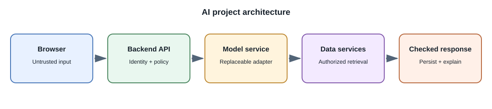
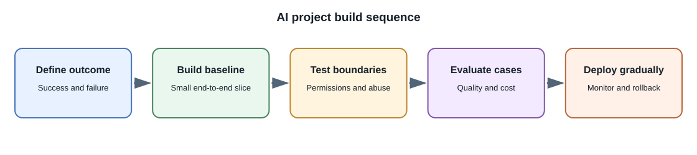

AI Project Learning Paths¶
Use these as step-by-step learning paths, not as instructions to build every feature at once. Pick one project, complete one small milestone, and decide whether to continue before adding the next capability. The study-notes path below is a suggested capstone because it connects AI concepts with ordinary full-stack engineering.


The hands-on labs are short exercises within the learning path; there is no separate testing project to complete. Evaluation and safety checks belong alongside the feature they assess.
Suggested capstone: study-notes assistant¶
Treat each item as a learning step. Stop after any step once it meets your learning goal; the later steps are optional extensions, not a requirement to build a complete product.
- Define one small task. For example, answer a question using one fictional note. Decide what a useful answer and a no-answer result look like.
- Choose an existing model. Start with a hosted API or an available local model; do not train a model. Compare only what matters for this task, such as answer quality, data handling, latency, and cost.
- Understand model selection. Decide whether this task needs a text model, embedding model, or both. Keep the choice fixed initially; study model routing as a later extension.
- Try the simplest prompt-based version. Give the model the small note directly and ask it to answer only from that material. Check a question the note answers and one it does not.
- Add retrieval when needed. Learn how chunking and embeddings select relevant passages as the note collection grows. Keep the note's source and access information with each passage.
- Connect retrieval to answers. Provide the selected passages to the model and show links to those actual sources. Do not treat generated citations as verified until the application checks them.
- Add access boundaries. Use fictional notes to understand ownership filtering and why the backend, not the model, enforces permissions. Include prompt injection in a note and observe why retrieved content must remain untrusted.
- Add a user interface only after the flow is clear. A minimal screen can submit a question, show the answer and sources, and explain when there is not enough information.
- Evaluate each milestone as you learn it. Keep a few expected question/source pairs, check whether retrieval found the right passage, verify that citations point to it, and try a missing-answer or cross-user case. This is part of each step, not a separate testing module.
- Consider optional extensions. Add a second model, a local runtime, document upload, or a narrow MCP search tool only when you can explain what the extension teaches and what new risks it introduces.
Related lessons: Model Types and Capabilities, RAG, AI Security, and Building AI Features.
1. Hosted-model API playground¶
Build a backend endpoint that accepts a user prompt, validates its length, calls a hosted model, and returns a bounded response.
- Keep the API key on the server.
- Add authentication, rate limiting, timeout handling, and usage tracking.
- Show loading, cancellation, error, and retry states in the UI.
- Test that an invalid request never reaches the provider.
- Do not log the key or unnecessary prompt content.
Prerequisites: Hosted Model APIs, Building AI Features, and Deployment, Cost, and Performance.
What you practice: secure server-side model calls, backend validation, provider adapters, UI states, quotas, and explicit failure handling. Choose this first if API integration is new to you; it builds the smallest reusable foundation for the later projects.
2. Local-model comparison¶
Run one small model locally and compare it with a permitted hosted model on the same set of fictional tasks. Record quality, latency, context limits, hardware use, and operational work. Keep the sample data non-sensitive.
Prerequisites: Model Types and Running Models Locally.
What you practice: model selection, local serving, resource measurement, and controlled comparisons. Choose this if you want to understand local-versus-hosted trade-offs before choosing an inference platform; it does not require training a model.
3. Structured support-ticket triage¶
Create a small set of fictional tickets and allowed categories. Ask a model for structured output, validate it on the backend, and route uncertain cases to a human review screen.
- Test malformed, ambiguous, and out-of-scope messages.
- Do not let the model execute ticket changes.
- Compare against a simple keyword or rules baseline.
Prerequisites: Prompting and Structured Output and Evaluation and Monitoring.
What you practice: schemas, a deterministic baseline, thresholds, review queues, and classification metrics. Choose this if you want to build a bounded business workflow where the model suggests a result but ordinary backend code retains authority.
4. Searchable study notes with RAG¶
Let a signed-in user add notes, index chunks, ask questions, and open cited source passages.
- Enforce note ownership before indexing and retrieval.
- Store source IDs and locations with each chunk.
- Test that one user's query never retrieves another user's notes.
- Test deletion and re-indexing when a note changes.
- Say when no useful source was found instead of inventing an answer.
Prerequisites: Embeddings and Vector Search, RAG, and Security and Responsible AI.
What you practice: ingestion, chunking, vector search, source citations, tenant isolation, data deletion, and answer evaluation. Choose this if you want a flagship project that connects AI retrieval to backend, database, security, and UI skills.
5. Fine-tune a narrow behavior (optional)¶
Only after establishing a baseline, use a small permitted dataset and a supported model to explore fine-tuning. Compare it with prompting on the same held-out examples. Document the model, data, terms, cost, and regressions. Do not upload personal or confidential data without approval.
Prerequisites: Fine-Tuning and Training Models.
What you practice: data curation, held-out tests, adapters, experiment tracking, and regression analysis. Choose this only after a baseline demonstrates a repeatable behavior gap that prompting and application logic do not solve.
6. Media understanding pipeline¶
Build a small workflow that accepts a user-selected image or short video, validates its format and size, extracts a few timestamped frames or a transcript, and asks a suitable model for a source-linked description. Show the user which frames or transcript segments support the result and let them remove the uploaded media.
Prerequisites: Images, Audio, and Video Formats for AI, Speech and Multimodal AI, and Security, Privacy, and Responsible AI.
What you practice: codecs and decoding, media limits, asynchronous processing, timestamps, consent, and multimodal evaluation. Choose this if media-based AI is relevant to your goals; begin with still images before adding longer videos or audio.
7. MCP project-search server¶
Create a read-only local MCP server that searches a small, synthetic project-notes folder. Expose one narrow search tool and one resource, run it over stdio from a compatible host, and inspect how the host discovers and invokes capabilities. Do not start with a shell-execution tool or credentials.
Prerequisites: MCP and Agent Integrations, Terminal Tools and Operating-System Access, and Security, Privacy, and Responsible AI.
What you practice: host/client/server roles, stdio transport, capability discovery, tool schemas, process permissions, and approval boundaries. Choose this if you want to learn how reusable AI integrations connect to external systems without giving a model unrestricted OS access.
8. Model evaluation harness¶
Build a small test runner that loads fictional task cases, calls a selected model adapter, validates structured outputs, and reports task-specific metrics, latency, and estimated usage. Compare a prompt or model change against the same baseline cases.
Prerequisites: Evaluation and Monitoring, MLOps and Model Lifecycle, and Mathematics for Machine Learning.
What you practice: reproducible fixtures, grading rules, regression testing, model versioning, and operational metrics. Choose this before fine-tuning or switching providers if you need evidence that a change actually improves your task.
Choosing a project¶
| Your goal | Start with | Why |
|---|---|---|
| Learn safe API integration | Hosted-model API playground | Smallest useful end-to-end feature |
| Understand model hosting choices | Local-model comparison | Measures quality and resource trade-offs |
| Build a bounded business task | Support-ticket triage | Practices schemas, metrics, and human review |
| Connect private knowledge safely | Searchable study notes with RAG | Integrates retrieval, authorization, and citations |
| Learn AI connector protocols | MCP project-search server | Shows discovery and OS process boundaries |
| Improve multimodal understanding | Media understanding pipeline | Adds media decoding and modality-specific evaluation |
| Compare model or prompt changes | Model evaluation harness | Provides evidence before adding complexity |
| Explore model adaptation | Fine-tuning experiment | Requires a clear behavior gap and evaluation baseline |
Suggested project quality checklist¶
- Define the user problem and a measurable success criterion.
- Keep authorization, validation, and side effects in ordinary backend code.
- Set input, output, rate, time, and cost limits.
- Add tests for errors, retries, permissions, and sensitive data.
- Evaluate representative successes and failures before deployment.
- Explain generated content and uncertainty to users.
- Provide deletion and correction paths for stored or derived data.
- Document which model and prompt versions were used.